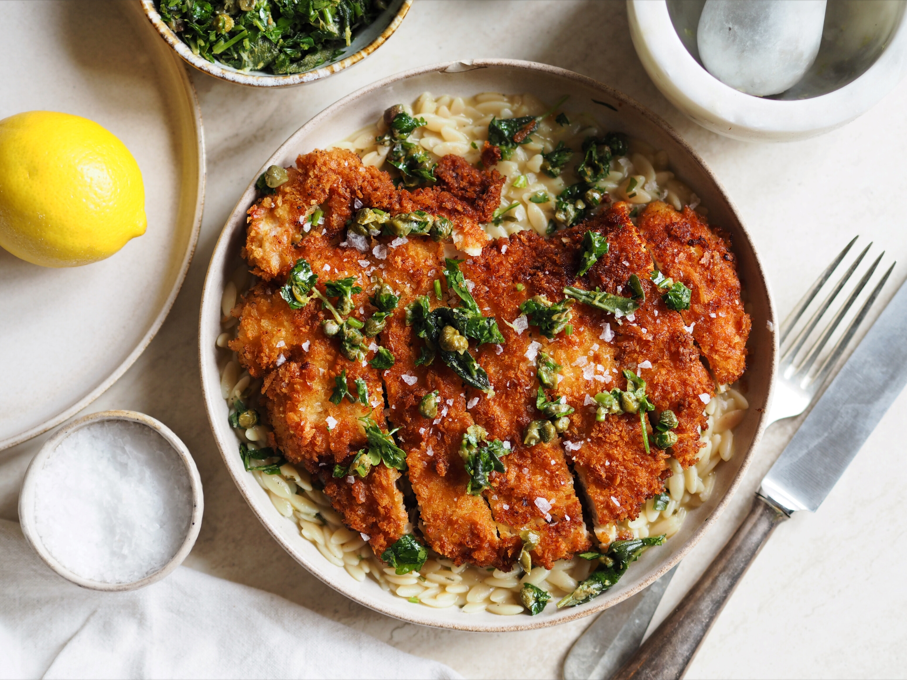

Ropogós pulyka schnitzel zsályás salsa verdével és orzo al limone-val

Előkészítés: 15 perc
Főzés: 30 perc
Összesen: 45 perc
Hozzávalók
A pulyka schnitzelhez
- 1.5 kg pulykamell (vagy csirkemellfilé)
- 3 dl napraforgó olaj
- 2 bögre finomliszt
- 4 db tojás
- 4 bögre panko
- só ízlés szerint
- fekete bors ízlés szerint
A zsályás salsa verdéhez
- 1 csokor zsálya
- 2 csokor petrezselyem
- 2 ek kapribogyó
- 1 ek citromhéj
- 1 fél citromból nyert citromlé
- 1 gerezd fokhagyma
- 2 ek olívaolaj
Az orzo al limone-hoz
- 4 bögre orzo (vagy 1 csomag)
- 2 ek vaj
- 1 ek olívaolaj
- 2 gerezd fokhagyma
- 1 ek citromhéj
- 1 liter csirke alaplé (vagy zöldségalaplé)
- 100 g pecorino sajt (vagy parmezán reszelve)
- 1 ek petrezselyem (finomra vágva)
- 1 ek citromlé
- 1 ek snidling
- só ízlés szerint
- fekete bors ízlés szerint
Elkészítés
A pulyka schnitzelhez
1. A pulykamellfilét ujjnyi vastag szeletekre vágjuk, majd egy húsklopfolóval átveregetjük, hogy lazítsunk a pulykahús rostjain és vastagságán. Sózzuk, borsozzuk.
2. Egy-egy külön tálba tesszük a lisztet, a felvert tojásokat és a pankómorzsát, majd a húsokat szépen sorban megforgatjuk a panír hozzávalóiban: elsőként a lisztben, aztán a tojásban, majd végül a pankómorzsában. A morzsában alaposan paskoljuk meg a húst, hogy a pankókéreg alaposan rátapadjon a panírral.
3. Egy vasserpenyőben olajat vagy zsírt melegítünk és a panírozott húsokat közepes hő felett aranybarna kérgűre sütjük. Nedvszívó papírral bélelt tálra tesszük, majd félretesszük.
A zsályás salsa verdéhez
1. A zsályacsokrot leveleire szedjük. A petrezselyem szárait is eltávolítjuk, majd finomra vágjuk.
2. Egy evőkanálnyi olívaolajat melegítünk egy serpenyőben, majd a kapribogyót és a zsályaleveleket megfuttatjuk a meleg olívaolajon, nagyjából 2-3 perc alatt, mire illatos nem lesz.
3. Kiöntjük a serpenyőből a fűszeres olajjal együtt egy keverőtálba, majd hozzáadjuk a finomra vágott petrezselymet, reszelünk hozzá citromhéjat és fokhagymát, meglocsoljuk pár csepp friss citromlével és még egy kis olívaolajjal, alaposan összekeverjük
Az orzo al limone-hoz
1. Egy nagy serpenyőben közepesen alacsony hőfokon hevítsük fel a vajat és az olívaolajat. Adjuk hozzá a zúzott fokhagymát, majd kevergetve addig főzzük, amíg megpuhul és illatos nem lesz, 2-3 percig. Adjuk hozzá a reszelt citromhéjatis, és ezt is kevergetve addig főzzük, amíg illatos nem lesz, további 30 másodpercig.
2.Növeljük a hőfokot közepesre. Adjuk hozzá az orzo-t, a sót és a borsot, és kevergetve főzzük, amíg az orzo kissé megpirul, kb. 1 percig. Öntsünk hozzá annyi alaplevet, hogy ellepje, majd gyakori kevergetés mellett forraljuk fel. Amint a tészta elkezdi felszívni a levest, és a folyadék a felére csökken, adjunk hozzá egy újabb bögrényi alaplevet. Folytassuk a főzést, kevergetve és megismételve a maradék alaplével, amíg krémes mártás alakul ki, és a tészta al dente lesz, összesen kb. 10 percig. Sózzuk, borsozzuk.
3. Vegyük le a tűzről. Keverjük bele a reszelt pecorino romano sajtot, a petrezselymet, a citromlevet és a metélőhagymát.
4. Tálaláskor a tányér aljára szedjünk a krémes-citromos orzóból, tegyük rá a felszeletelt pulyka schnitzelt, merjünk rá a zsályás salsa verdéből, majd szórjuk meg sópehellyel.